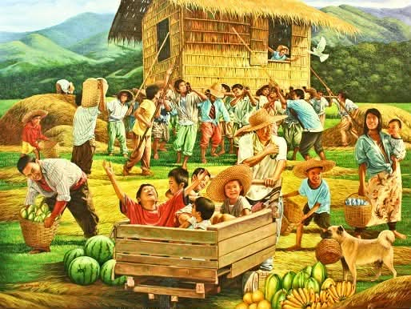

Ugnayan ng Kultura at Kamalayang Pangkasaysayan

Ano ang Kultura?
Ang kultura ay paraan ng pamumuhay ng isang pangkat ng tao. Kabilang dito ang kanilang mga kaugalian, tradisyon, paniniwala, wika, sining, at mga kagamitang nagpapakita ng kanilang pagkakakilanlan. Sa pamamagitan ng kultura, mas nauunawaan natin ang ating kasaysayan at pinagmulan.
Materyal at Di-Materyal na Kultura
Materyal (Tangible)
• Bahay
• Kasuotan
• Kagamitan
• Pagkain
• Sining
Di-Materyal (Intangible)
• Wika
• Kaugalian
• Tradisyon
• Paniniwala
• Pagpapahalaga
Pagbabago ng Kultura Kasabay ng Paglipas ng Maraming Taon
Panahon ng Katutubo
Tradisyonal at payak na pamumuhay.
Panahon ng Espanyol
Paglaganap ng Kristiyanismo.
Panahon ng Amerika
Pagpapakilala ng wikang Ingles at demokratikong pamahalaan.
Panahon ng Hapon
Panahon ng Ikalawang Digmaang Pandaigdig (WWII).
Binukot (Itinago/Itiniwalag)
• Maganda, maputi, at parang prinsesa.
• Hindi maaaring tumapak sa lupa.
• Nakapag-aral matapos ang WW2.
Kamalayang Pangkasaysayan
Ito ay ang pagkakaroon ng kaalaman at pag-unawa sa mga pangyayari sa nakaraan na humubog sa kasalukuyang kalagayan ng isang lipunan.
Ugnayan ng Kultura at Kasaysayan
Ang kultura ay nabubuo at nagbabago dahil sa mga karanasan at pangyayari sa kasaysayan. Samantala, ang kasaysayan naman ang nagbibigay ng paliwanag kung paano nabuo ang kultura ng isang pangkat ng tao.
Kahalagahan ng Kultura sa Kasaysayan
• Pinapanatili ang pagkakakilanlan ng isang pangkat.
• Nagpapakita ng mga karanasan ng mga ninuno.
• Nagbibigay ng koneksyon sa nakaraan at kasalukuyan.
Pagpapanatili ng Kultura
Mahalaga ang pagprotekta sa kultura upang hindi mawala ang mga tradisyon at kaalaman na ipinasa ng mga naunang henerasyon.
Sa pamamagitan ng pag-aaral ng kultura at kasaysayan, mas nauunawaan natin ang ating pinagmulan at kung paano tayo nahubog bilang isang lipunan.